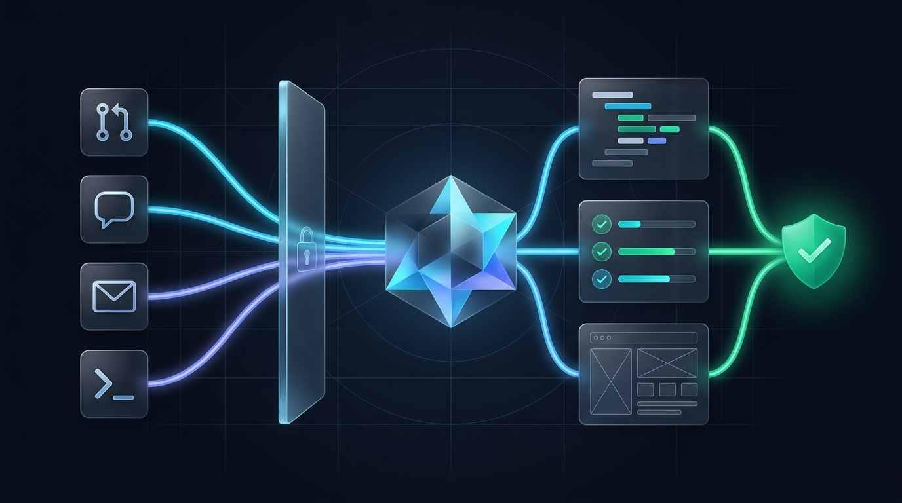

全天候主动接活的多会话工程智能体
七大入口异步收活 · 三层代码门禁鉴权 · 难题自主拆分为独立可打开对话并混配模型 · 60% 无损上下文接力 · 独立审查闭环

七源异步接入
GitHub、飞书、个人 QQ、官方 QQBot、微信、企业微信、IMAP/SMTP 邮箱（含 Gmail）与本地聊天统一调度。
三层硬隔离权限
代码白名单网关 → 语义评估 → 受控凭证包装器。外部消息与网页内容永远无法放大权限。
弹性多对话与异构模型
默认允许 5 个独立分工对话（用户可自由调大或调小，无硬性上限），逐槽位指定模型或留空继承，完成后经只读独立复查把关。
60% 无损上下文接力
主会话、工单、子代理与分工对话达 60% 自动提炼意图与尾部进度，原子切换至新代会话（r1→r2→r3），旧窗追问自动跟随。
全景架构

开始使用
文档目录
v0.3.18 要点速览
| 项目 | 说明 |
|---|---|
| 交付形态 | 轻量插件包（.tgz） / 四平台零依赖自带 Node+DSH 内置包（.zip） |
| 每任务分工对话 | 默认最多 5 个独立可打开分工对话（同工作区侧栏顶层展示），无固定上限；全页可达与稀疏存储，逐槽位混配模型或严格继承发起窗口模型 |
| 设置与协作闭环 | 设置页直达「会话分工与模型」「上下文与预算」与聊天顶栏快捷状态；支持成员双向互通、动态补位领取、原负责人合并与独立复查回避 |
| 并发工单槽位 | 默认 3 个并发执行工单 + 1 个人工追问专属预留槽位 |
| 上下文接力 | 默认 60% 窗口占比触发无损代际接力（覆盖主会话 / 工单 / 子代理 / 分工对话，保留认领与归属） |
| 独立复查与工具 | 最多 3 轮只读独立复查 + 内置 14 项技能 + orchestrator_division_todo + scripts/benchmark-throughput.mjs 吞吐测速工具 |
| 质量门禁 | 1,370 项自动化测试通过、37 项历轮黑盒独立验收全绿、发行包安全隐私预检 0 告警 |
| 开源许可证 | MIT License |